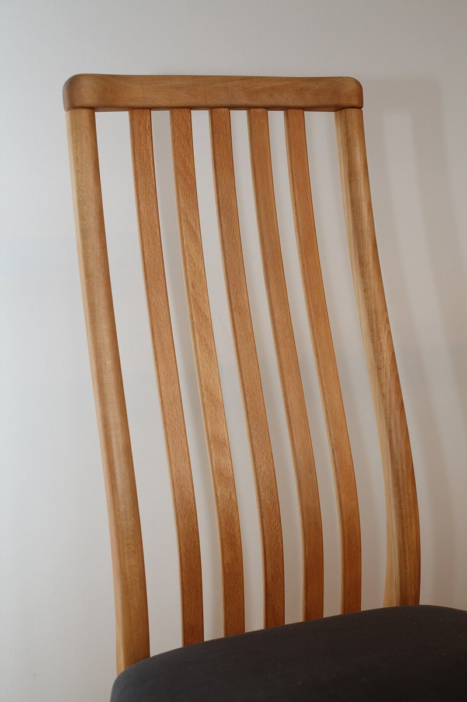
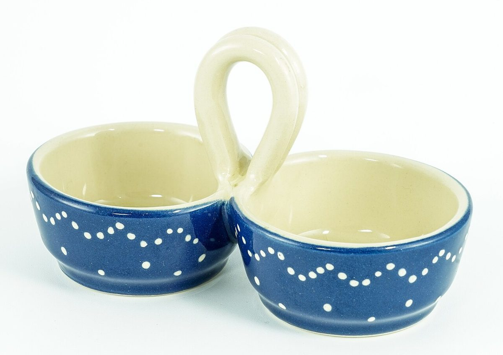

店のこと
お店について確認できているのは、所在地・電話番号・Instagramのアカウントだけです。
「想像してみる」の部分は、制作側が想像して書いたものです。お店の実際の様子・考え・メニューとは関係がありません。
確認できていること
- 店名は「chico cafe」、業種はカフェ
- 所在地は長野県伊那市長谷中尾305-1(〒396-0404)
- 電話番号は090-2520-1721
- Instagramのアカウントは @chico__cafe
- 営業時間・定休日・メニュー・価格・ご予約・駐車場は準備中

想像してみる
小さな店名から
由来は分かりません。制作側は「chico」という綴りから、ちいさい、かわいらしい、という言葉を連想しました。実際のお店の姿ではなく、制作側が勝手に思い浮かべたことです。

